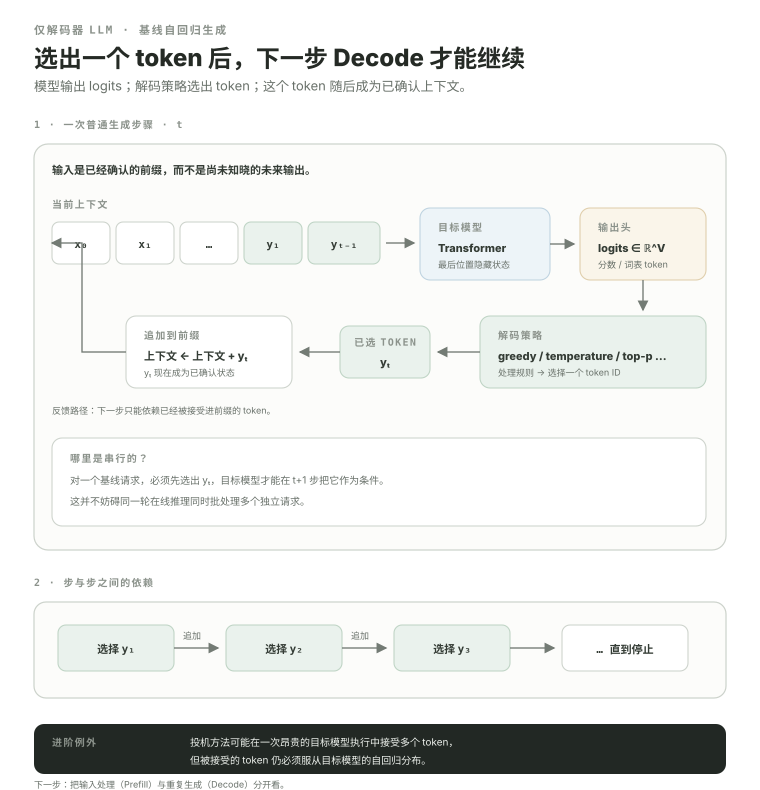

自回归生成：为什么“下一个 token”会把整个在线推理系统变成状态机？
训练时我们常把很多已知 token 一次送进模型；在线生成则有一个新的硬约束：未来 token 还不存在。模型只能根据已经确认的前缀产生下一个 token 的分数，decoding policy（解码策略：把模型输出的 logits 转成实际选中的下一个 token）选出一个 token，把它加入前缀，然后下一步才有了新的条件。后面的 Prefill / Decode、KV Cache、scheduler（调度器：决定每轮哪些 requests 推进以及推进多少 token），本质上都在围绕这条状态演化链做系统优化。
- 解释最基本的 decoder-only（仅解码器架构：只使用 Transformer 的解码器堆叠做自回归语言建模）生成为什么存在严格的条件依赖。
- 知道目标模型先输出 logits，再由常见 decoding policy 选择 token。
- 理解为什么普通目标模型的 Decode 步骤之间存在串行依赖。
- 知道 speculative decoding（推测解码：先用较便宜的草稿模型提出多个候选，再由目标模型批量验证）等 multi-token 技术能减少昂贵的 target-model iteration（执行轮次：scheduler 规划并执行一次模型工作的循环），但没有删除目标模型定义的自回归分布。
- 从“重复计算历史 K/V”自然推导出 KV Cache 的必要性。
- 区分TTFT（首 Token 延迟：从请求进入系统到第一个输出 token 可见的端到端时间）、ITL（Token 间延迟：流式生成时相邻可见输出 token 之间的时间间隔）、TPOT（每输出 Token 时间：生成阶段按输出 token 聚合后的平均耗时指标）和吞吐量，并知道比较指标前必须先看清基准测试口径。
推理系统真正调度的不是“句子”，而是一串 token IDs 和它们对应的运行时状态。
inference engine（推理引擎：把 request 管理、scheduler 和模型执行组织成服务循环）先接收文本请求。Tokenizer（分词器：把文本编码成模型词表中的 token IDs）再把例如“AI infra 很重要”转换为离散 token IDs。具体 tokenizer 怎么切不是这节重点；系统层先抓住对象：
IDs 经过 embedding 变成隐藏状态，再穿过 Transformer。对生成任务而言，真正关键的是：这些 prompt token 和之后已经接受的已生成 token，一起构成当前 confirmed prefix（已确认前缀：已经被模型接受、后续生成可以确定依赖的全部 token）。
模型不会直接“决定一句话”，而是对下一个 vocabulary token 给出一组 raw scores。
最后位置的 hidden state 经过 LM head，得到 V 维 logits。为了建立第一层直觉，可以把 softmax 后的值看成候选 token 概率；真实 sampling（采样：按处理后的概率分布随机选择下一个 token）路径还可能先应用 logit processors、temperature（温度：缩放 logits 以控制概率分布的尖锐程度）、top-k 和 top-p（核采样：只在累计概率达到阈值 p 的最小候选集合中采样）等变换。
词表有 V 个 token，就有 V 个 raw scores；系统只需要从这些候选里决定下一 token。
Greedy（贪心解码：每一步直接选择当前分数最高的 token）取最大分数对应 token；sampling 则从处理后的分布采样。Transformer 主体负责产生 logits，decoding policy 负责“如何选”。这两层不要混在一起。
一个 token 被选中以后，它才成为下一步可以依赖的真实状态。
用概率语言写，就是第 t 个输出来自 p(y_t | x, y_1, …, y_{t-1})。未来的 y_{t+1} 要以已经确认的 y_t 为条件，所以基础版本目标模型 steps 之间有数据依赖。

同一个 Transformer，训练时的数据组织和在线生成时的 runtime state 完全不同。
所以“训练 kernel 很快”并不能自动推出在线推理很快。在线推理还必须解决一个训练里弱很多的问题：requests 在时间上不断到达、不断结束，而且每个请求当前可计算的 token 数不同。
如果每生成一个 token 都从头重新算整个前缀，绝大多数历史 attention 投影都会重复。
假设 prompt 长 1000 token。第一步处理 prompt；得到 y₁ 后，如果第二步又把这 1001 个 token 全部从头走一遍 Transformer，旧 token 对应的每层 Key / Value 会被再次计算。第三步又重复一次。
Attention 给了一个关键不变量：历史 token 已经计算出的 K/V 在后续普通 decode 中仍然可复用。于是系统自然会问：为什么不把历史 K/V 留在 GPU 显存里？
这就是 KV Cache 的来源。但在 06.3 之前，下一课先把请求分成 Prefill 与 Decode，因为“第一次处理整个 prompt”和“之后推进一个新 token”在 shape、算术强度与延迟目标上很不一样。
端到端 2 秒不能告诉你：用户是在等第一字，还是后面输出一卡一卡。
当前 vLLM 在线推理基准测试也把 TTFT、TPOT、ITL 分成三组统计，同时另外报告request throughput、output-token throughput和 end-to-end latency。这个区分很重要：延迟是用户侧体验，吞吐量是系统整体产能，它们常常存在 trade-off。
BenchmarkMetrics 分别维护 TTFT / TPOT / ITL 的 mean、median、std 与 percentiles。从这里开始，推理 Infra 不只优化模型，还要管理“活着的请求”。
所以后面的路线会自然变成：Autoregressive state → Prefill/Decode → KV Cache → 调度器 → Continuous Batching → Paged KV → KV Connector。
先确认你已经把“模型计算”和“请求状态演化”分开。
本课出现的缩写与术语
正文以自然中文为主，必要的源码缩写与专名可以保留；完整英文名集中放在这里，便于继续阅读英文文档与源码。
| 缩写 | English full name | 中文名 | 本课怎么理解 |
|---|---|---|---|
LLM | Large Language Model | 大语言模型 | 本课程训练与推理系统的主要模型对象。 |
KV | Key-Value | 键-值 | 自回归 Attention 需要复用的历史 Key/Value 状态。 |
TTFT | Time To First Token | 首 Token 延迟 | 从请求进入系统到第一个输出 token 可见的端到端时间。 |
ITL | Inter-Token Latency | Token 间延迟 | 流式生成时相邻可见输出 token 之间的时间间隔。 |
TPOT | Time Per Output Token | 每输出 Token 时间 | 生成阶段按输出 token 聚合后的平均耗时指标。 |
AI | Artificial Intelligence | 人工智能 | 本课程讨论的大模型训练、推理与系统基础设施所服务的计算领域。 |
LM | Language Model | 语言模型 | 对 token 序列概率或下一 token 分布进行建模的模型。 |
GPU | Graphics Processing Unit | 图形处理器 | 大模型训练与推理中执行 GEMM、Attention 等高并行计算的主要设备。 |
GEMM | General Matrix Multiply | 通用矩阵乘法 | Linear、MLP 等大量计算最终会落到的矩阵乘核心操作。 |